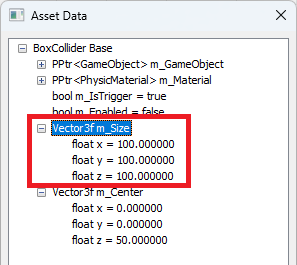
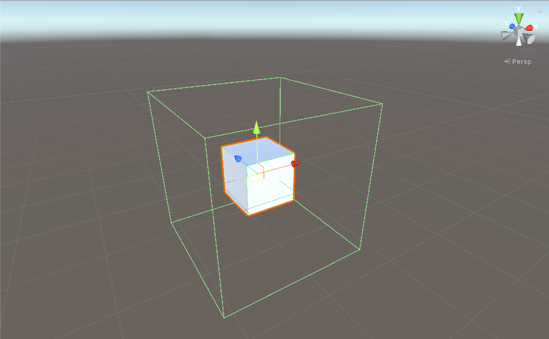
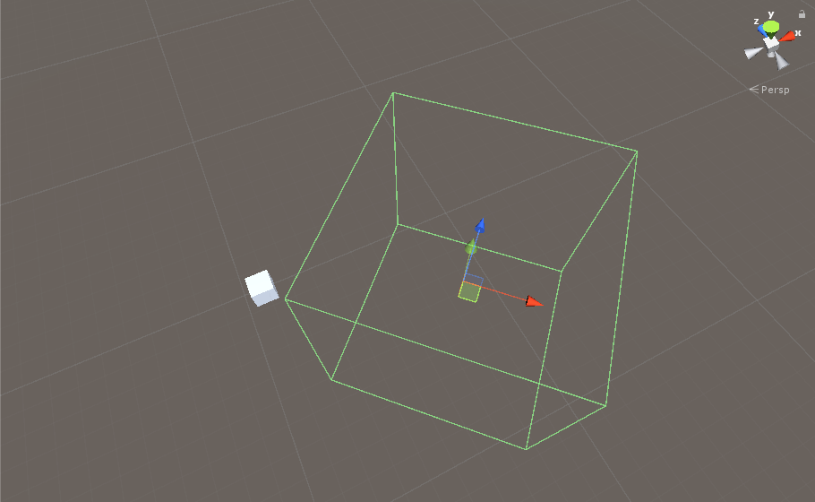
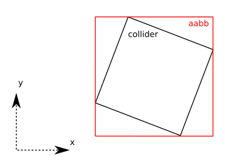
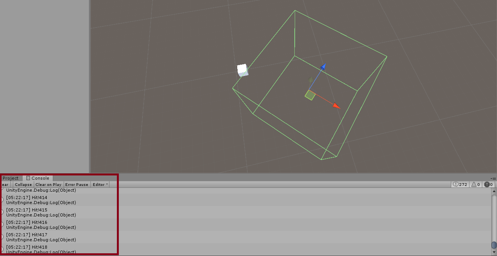
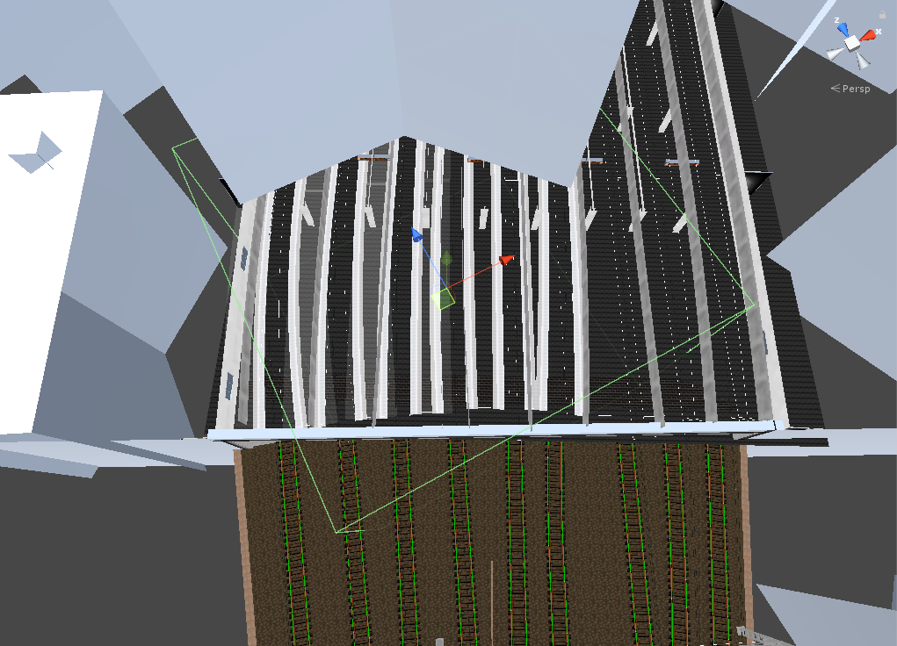
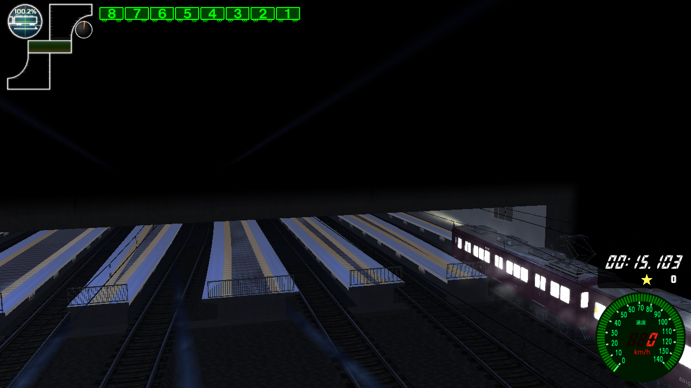

コミックスクリプトの位置の仕様書
これは、コミックスクリプトのイベントが
どの範囲まで達すれば発動するかを分析した仕様書である。
タイトルは、「コミックスクリプト」と書いているが
「駅名表示」、「CPU切り替え」、「RainChecker」、「ゴール判定」
のイベントにも同じく適用される。
イベントをチェックするためのクラス「EventChecker」は、
当たり判定に使う「HitChecker」を継承しており、
その当たり判定の方法は、四角いボックスに触れると発動する
Unityの「BoxCollider」で判定する。

BoxColliderは、長さが100の立方体として定義されている。
中心位置は初期値が（0, 0, 50）で定義されているが

これは、あるオブジェクトにBoxColliderをアタッチした場合
初期位置は図のように、Boxの中心位置をオブジェクトの位置基準に設定するため
あるレールの始端から反応させるために、Z方向へ+50する。
ただ、注意点がある。

もし、BoxColliderがこのようにワールド座標基準で回転している場合

「bounds」の要素を使って当たり判定をするため、
図にように赤い枠になり、もっと広くなる。

実際にテストしてみると、オブジェクトは明らかにBoxColliderの外側にあるように見えるが
下のDebug画面では、BoxColliderにヒットしていると、ずっとログが出る。
ゆえに、回転させると当たり判定がもっと広がる。
宝塚線が下記のようにコミックスクリプトが定義されている場合
| index |
番号 |
タイプ |
レール |
オフセット |
※コメント |
| ・・・ |
| 33 |
2990 |
3 |
798 |
0 |
//ゴール |
| ・・・ |
ゴール判定は、798レールの始端に触れると反応する
上記の図のような範囲がゴール・・・と思うが

上記で説明したように、回転しているので図のような範囲になる。
つまり、梅田駅の9番以外ゴール判定になる。

実際に、レール位置を変えてやってみると、
ここのみ全くゴール判定にならないことが分かる。
Q. posでずらしたレールにイベントを配置すると、なぜかちゃんと判定されない？
A. 仕様上、posはモデルの下位階層のpositionを変えるだけで
駅判定は、モデル自体のpositionに配置される。
つまり、コミックスクリプトの発動位置は、レールのposの値に影響されない。